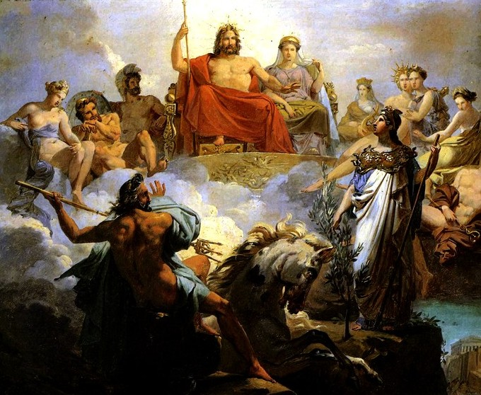
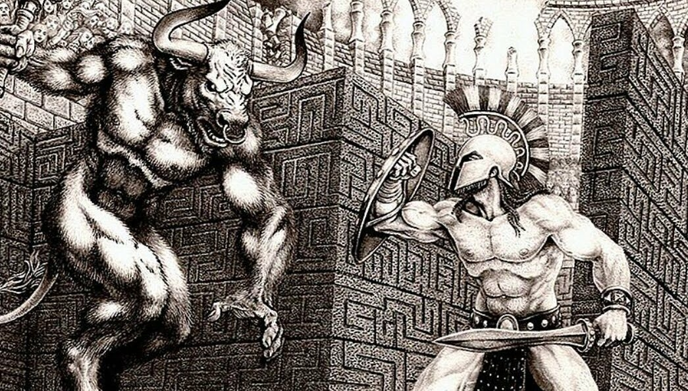

Коротко про Давньогрецьку міфологію
Давньогрецьку міфологію сьогодні прийнято ділити на три періоди: хтонічний(або доолімпійський), класичний Олімпійський і пізній героїчний. До кожного із періодів відносять відповідні до них історії. Погляди, характерні для хтонічного періоду, склалися в грецькому суспільстві задовго до дорійського завоювання XII століття до н. е. і навіть до виникнення перших ахейських держав. Не збереглося джерел, в яких би ці погляди були представлені повно і послідовно. Тому доводиться використовувати окремі архаїчні образи чи міфологічні епізоди, що випадково відбилися в текстах, що відносяться до значно пізнішого часу.
Список періодів та відповідних їм міфів:
Термін «хтонічний» походить від грецького слова «хтон» — «земля». Земля сприймалася давніми греками як жива і всемогутня істота, що усе породжує й усіх живить. В цей період, ще недостатньо розвинутої цивілізації, греки надавали божественість багатьом речам та явищам, які вони самі недостатньо розуміли. Камені та дерева незвичайних форм та розмірів, природні явища та катаклізми - усе це вважалося дивним, божественим. Але усі ці божества, на той час, ще не мали своїх ідентичностей та імен. Ця тенденція на персоніфікацію з'явиться в культурі пізніше.

Початок періоду Олімпійських богів ознаменувався переходом до патріархату та виникненням перших держав ахейців. Усе це дало поштовх до повної зміни всієї системи релігійного сприйняття, до відмови від старих богів і появи нових. Як і в інших народів, старих та безіменних богів греки замінили на богів-заступників окремих груп у людському суспільстві, груп, що поєднувалися за найрізноманітнішими ознаками: класовими, становими, професійними. Але найцікавішим в появі нових божеств є саме їх тріумф над попередниками. Зевс разом із іншими богами здобуває перемогу над стародавніми чудовиськами: Драконами, Титанами. А їхні потомки, напівбоги, вже в пізньому героїзмі завершують їх боротьбу, добиваючи залишки старих чудовиськ: Медузу, Химеру, Лірнейську гідру та інших. Це є цікавою метафорою на перехід суспільства давніх греків на нову ступінь, залишаючи позаду старі, темні часи.
"Легенди золотогу віку", як їх часто називають в літературі, вцілому і є збірником історій про новий пантеон богів, їх становлення, правління та області їх панування. Також туди включені повісті про молодших напівбогів. Так, Зевс перемагає свого батька Кроноса та виганяє Титанів до Тартару, Аїд викрадає Персефону до Підземного світу, його володіннь, Прометей несе вогонь людям, за що пізніше буде жорстоко покараний, а Персей відрубає голову Медузі. Всі ці історії формують уявлення про подальший розвиток міфології, а також вводить поняття "герой", що стане значно релевантніше в наступному періоді.

Становлення і розвиток держави, ускладнення суспільства і суспільних відносин, збагачення уявлень про оточуючий Грецію світ неминуче підсилювали почуття трагічності буття, переконаності, що у світі панують зло, жорстокість, безглуздість і абсурд. У пізній героїчний період розвитку грецької міфології, відроджуються представлення про силу, якій підкоряються все існуюче — і люди, і боги. Перед нею схиляється навіть сам Зевс, змушений то силою випитувати в титана Прометея пророкування власної долі, то упокорюватися з іспитами і мученнями, через які повинний пройти його улюблений син Геракл, щоб він зміг вступити в сонм богів. До людей доля ще більш нещадна, аніж до богів, — її жорстокі і часто безглузді веління виповнюються з невідворотною точністю. Та й боги тепер уже не настільки милостиво налаштовані до людей. Покарання тих, хто порушив їхню волю, жахливі і невиправдано жорстокі: Тантал вічно мучиться від голоду і спраги, Сізіф зобов'язаний постійно піднімати на пекельну гору важкий камінь, Іксіон прикутий до вогненного колеса. Але саме в такий період, міфологія наповнена великими героями, так знайомими людям у сучасному суспільстві. Самі ж події в таких історіях з часом ставали більш приземленими. Хоча на початку Геракл і виконував свої 12 подвигів, б'ючися з страшними чудовиськами, вже трохи пізніше легендарні герої приєднувалися до звичайної війни за Трою.
Геракл був народжений від союзу смертної жінки Алкмени та царя богів Зевса, який хотів дати людям великого героя. Безсмертя ж він випадково отримав від богині Гери, яка розгнівавшись прокляла Геракла щоб той, в пориві безумства, вбив всіх своїх дітей. Зрозумівши що він накоїв, Геракл звернувся до Оракула, який порадив йому виконати дванадцять подвигів для його брата, царя Евристея, аби Гераклів гріх був прощений. Так і почалася повість про великі подвиги Геракла: Немейського лева, Лернейську гідру, Еримантського вепря, Кернейську лань, Стимфалійських птахів, пояс Іпполіти, Авгієвих стаєнь, Критського бика, Діомедових кобил, корів Геріона, яблук Гесперид та пса Цербера.

Тесей - один із найвідоміших героїв у давньогрецькій міфології. Він був учасником багатьох історій, але найвідомішою з них все ж є вбивство Мінотавра. На далекому острові Крит правив могутній цар Мінос. Але збудував якось Мінос лабіринт у якому сиділо страшне чудовисько - Мінотавр, що мав тулуб людини та голову бика. Та потрібно було кожного року посилати сімох дівчат та сімох хлопців Мінотавру в лабіринт, з якого ніхто не міг вибратися. Одного разу випала ця доля і Тесею, але дочка царя Міноса, Аріадна, дала Тесею чарівний клубок з нитками, аби з його допомогою Тесей зміг повернутися з лабіринту. Так, перемігши Мінотавра у важкій битві, Тесей зміг вибратися із лабіринту, ставши героєм Криту.